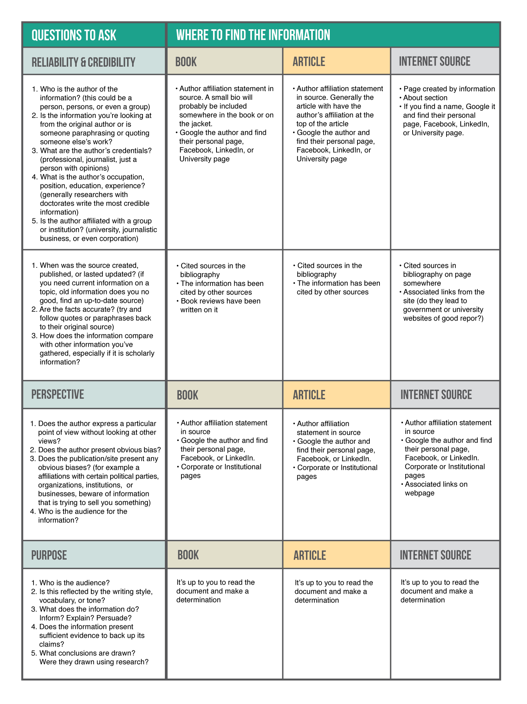
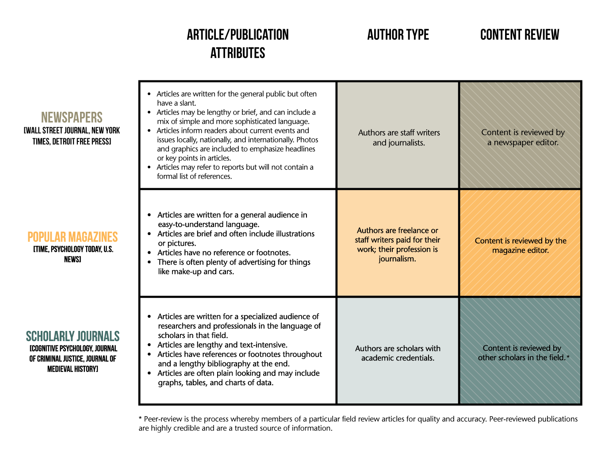

Welcome to the library, the first stop on your way to writing a successful speech! This walkthrough will take you through all the things that you’ll need to know to engage your audience and get your ideas across by being able to present the facts.
Why focus on research? You want people to believe that you know what you're talking about! For instance, let's say your big issue is air pollution. You promise to pass a law that says all new cars must run on electricity, not gas. That should do it! But it would help if you had a few facts: How much bad air does one car create each year? How many new cars are sold in the U.S. every year? So how much will pollution be cut every year? Your speech will sound really strong if you have the facts to back it up.
Many students begin their research before they’ve even got a solid idea of a topic that they might want to use for their projects. Choosing a topic that is meaningful to you is important not only to hold your interest but will also encourage you to stay committed to the project.
The first step in the research process is to get a rough topic idea in your head before moving on. Take the “Are We A Match!” quiz to the right and then look below to see if you are ready to begin the research process.
(1-2 points) Your topic may or may not be of interest to you. You will want to think it through a bit more. Can you see yourself researching this topic? Perhaps make a list of other potential topics before choosing one and then retake the quiz.
(3-4 points) Your topic probably holds some interest to you but you may want to investigate it a bit further. Perhaps do a Google search. See what kind of information is out there and if you’re still interested in the topic, move forward!
(5+ points) Your topic is probably something that excites you and you’ve already got some ideas or background that will help propel you forward in the research process.
Instructions: Investigate www.lib.wayne.edu below to learn more about the features and services available to you. Click on the following areas of the home page to learn what they are: Research Warrior, Library Catalog, Article Databases, Research Guides and Ask-A-Librarian.
Click on each of the following for a more in-depth view at how you can use these features as you research:
Find the Com1010 research guide located under Communications on the Research Guides page. Which database is recommended first for Speech #2?
You should have found that Omni Full Text Select is one of the recommended article databases for Speech #2.
Gale Virtual Reference Library is your authoritative source for finding background information – it’s the librarian’s equivalent to Wikipedia (we like Wikipedia, too, but the information in this database is written by professors and specialists and published in encyclopedias). Like Wikipedia, the articles in this database ALSO have suggestions for other articles you might be interested in, in addition to helpful content. If you need help finding one of these articles feel free to “Ask-A-Librarian!”
Instructions: Find and use Gale Virtual Reference Library from the Article Databases tab on the library home page. The topic I’ve chosen is the “Digital Divide” – take a look in Gale Virtual Reference Library for information on my topic.
Now, do the same with your topic. You can also use Google. Just remember, if you locate something that you find interesting, write it down and include where you found it.
When looking for Digital Divide, which publication was the first result found in?
If you looked closely the first article result for Digital Divide was found in the International Encyclopedia of Social Sciences
Instructions: Search for “Digital Divide” in both Research Warrior and the Library Catalog from the library home page
In which resource did you find books related to the topic “Digital Divide”?
You should have picked Both. Remember, Research Warrior and the Library Catalog will let you find books in our catalog.
Which resource did you find had a broad array of resources on your topic, including articles?
You should have picked Research Warrior. Remember, Research Warrior not only looks for books but articles from journals, newspapers and magazines as well!
Which resource would you most likely use to find a specific book title such as: “From Digital Divide to Digital Opportunity?”
You should have picked Library Catalog. Remember, when you know a specific title of a book, it will always be faster and easier to use the Library Catalog tab to search for it. If you’re interesting in knowing an easy way to get books that Wayne State University Libraries don’t own, check out this information on MelCat.
Now that you know how to get around the Wayne State University Library home page, you’ll be turning your topic into a research statement or question. This is where your prior knowledge and looking at background information is extremely helpful. Look at your notes from the Gale Virtual Reference Library Activity to help you fill out the form on the right.
Here’s how I did mine:
Statement: How does the Digital Divide affect university students in urban areas?
Topic: Digital Divide
Information that I know: deals with access to info and comm. technologies (like the internet), generally effects lower socioeconomic and rural classes, even if access is provided what about literacy? who teaches ppl to use technology? who is responsible for providing access to computers and the internet?
Where did I get the info: Gale Virtual, Digital Divide Websites on college students
Key Points: Def. of Digital Divide; Info on Univ. students with Digital Divide problems; University bridging gap
Instructions: Fill in the form below with answers from your research. Use Gale Virtual Reference Library, notes, prior knowledge, a textbook, anything to help guide your future research.
Topic
Information that I know
Where did I get it? (if you have citations put them here)
Important points I've discovered about my topic
Keyword searching is a type of searching you are probably already familiar with because you probably search Google using keywords. For example: "weather Detroit." They are generally the important nouns/verbs from a bigger thought or question. Out of habit you probably think of words or phrases that have to do with what you are looking for and then into the search box they go. Sometimes you may use sentences, for example: "what is the weather in Detroit?"
When searching the Library Catalog or one of the article databases, you will want to use ONLY keywords or phrases. Phrases should go in quotes, for example: “Digital Divide.” It is equally important to think of other ways of describing your topic, synonyms or antonyms. Why? Because the databases are looking for the words you use to search in different places. The author of your article may not have used the phrase “Digital Divide” with college students but instead used it with high school students. Here are my keywords and some synonyms I found while reading background information.
How does the Digital Divide affect university students in urban areas?
Digital Divide: internet access inequality, digital inequality, digital communication inequality, global digital divide
University Students: students, college students, first year college students
Urban areas: cities, minority inequality, poor
Notice how in each case I found narrow keywords/phrases like “digital communication inequality” but also broad keywords/phrases like “students”. Notice that “affect” is NOT a keyword. Words like “affect,” “how,” “increase” don’t really add anything to our search so it is more effective to leave them out. I’ve included a worksheet you can print and use for your topic and a sample of one I’ve already filled out.
How do oil spills damage the environment?
You should have picked out “oil spills,” “damage” and “environment”
What dangers do school sports pose for students?
You should have picked out “dangers”; “school sports”; “students” (students could be left out simply because if you’re looking at SCHOOL sports, students is implied)
What foods do grizzly bears eat in the Yellowstone area?
You should have picked out “foods,” “grizzly bears” and “Yellowstone” (grizzly bears could be searched for as a phrase or you could search for just bears; small changes like this can easily change your results list so don’t be afraid to try out new searches)
Now that you’ve started looking at information on your topic and started getting ideas for your speech, it is important to take a moment to make sure that the information that you ultimately use for your paper will be quality information. In today’s world, evaluating information is difficult since information is everywhere that we look. You must be able to ask yourself questions when you are reviewing a piece of information to make sure that the content is providing quality information, based on facts. Questions to ask yourself when you are reviewing information: Does the author have some sort of authority on the subject? Is the information reliable? Is there credibility to what is being said? These are just some of the questions you’ll want to ask. Review the chart below to find more.
Instructions: Study the chart below. Examine the information that you’ve been able to find so far. Does it agree with what the quality information chart is describing?
Before you start looking at articles in databases it is also important to understand the difference between “scholarly” and “popular” articles. It is likely that your instructor has asked you to find a mix of sources, like magazines, newspapers or scholarly journal articles. Scholarly journal articles can also be referred to as “peer-reviewed” or “refereed” articles.
Peer-review and refereed articles are the same thing: the article has been submitted to researchers in the field (generally PhDs) who have told the journal that the research has been done in a quality manner and the article should be printed.
Instructions: Study the chart below and get ready to use the information in an activity.
If you haven’t studied the Scholarly Versus Popular chart, do so before attempting this activity.
Instructions: Read the following passages. Based on the information you’ve read about different types of resources, choose the one that best fits the style of writing for each passage.
“The calendar says August, but Americans are in for a snow job from President Obama’s principal organizing arm, which this month will be primarily pitching ObamaCare, along with climate change and maybe even gun control. Organizers call it grassroots “blizzarding.” Try government propaganda. Paul Bedard of The Examiner of Washington reports that Mr. Obama’s Organizing for Action group is planning high-tech assaults on GOP lawmakers along with so-called “public information" campaigns that will capitalize on social media. So, how deep will the "blizzarding" get? Think of Susan Rice, former U.N. ambassador/lackey, blaming the attack at the U.S. outpost in Benghazi, Libya, on an anti-Muslim video. Or how the Obama administration boasted ad nauseam last year that it had al-Qaida on the run yet clamped down on any references to "terrorism." Oh, what a difference a year makes, eh? Team Obama won that disinformation campaign and another four years to implement ObamaCare, capture the climate's carbon (regardless of how flat global temperatures remain) and erode freedoms that haven't already been chiseled away from constitutional protections. But this year, amid scandals that the administration denies, Americans are more skeptical -- if not angry. And no matter how it's served up, a spoonful of sap won't make ObamaCare go down any easier for a nation that doesn't want it.”
This passage came from a Newspaper Editorial: "EDITORIAL: Obama’s snow job.” Pittsburgh Tribune-Review [Pittsburgh, PA] 12 Aug. 2013. Opposing Viewpoints In Context. Web. 12 Aug. 2013.
“Evidence of athlete use of AS has been available since the 1950s with AS contributing to c. 60% of adverse findings according to recent WADA reports.6 In the general population there are data showing an increase in the prevalence of AS use.7 Despite such widespread use there is still some controversy as to the CV health consequences of taking AS.8 Large sample epidemiological evidence of the CV health consequences of long-term AS use is lacking, likely because of the reluctance to admit use and/or possession. In addition, evidence for a link between AS use and CV disease outcomes or end-points is mostly limited to case study reports. Published case studies include AS use associated with myocardial infarction,9 stroke,10 embolism11 and other CV health issues (table 2). Although caution should be expressed in implying cause and effect from case studies,8 they can provide direction for case series and experimental studies as well as informing/educating clinical practitioners.”
This passage came from a Scholarly Journal
“Jeff Novitzky, the investigator with the Food and Drug Administration who built the doping cases against Barry Bonds and Marion Jones, heard a variation on that line—Do we really want to know?—after he launched a federal probe into Armstrong and the U.S. Postal Service team in 2010. The U.S. attorney's office in Southern California chose not to pursue a criminal case against the Texan last February, leaving USADA and its executive director, Travis Tygart, to begin its doping investigation. Tygart invited witnesses to reiterate under oath what they had already told the Feds. After years of keeping secrets, and of what the USADA report calls significant pressure and attacks from the Armstrong camp, the truth-telling came as catharsis. According to a source familiar with the government probe, the investigators' challenge had been less to get Postal riders to talk than to get them to stop crying so they could talk.”
This passage came from a Popular Magazine
Instructions: Watch the video below to learn how to search for articles in an article database. While we are showing you how to find articles in Omnifile Full Text Select, the majority of article databases you’ll use will function similarly.
Now that you have a good idea of the different types of articles that you’ll encounter while searching the internet or one of Wayne State University Libraries databases, you can start searching for information to back up your speech in an article database (just a big collection of articles that you can search in). We recommend Omnifile Full Text Select as a good place to search for material for this assignment but any of the General/Multidisciplinary article databases will do. Why? Because they provide broad access to many types of articles in a wide range of subject areas. Remember, you can always use the pull down menu on the article databases tab or one of the Research Guides to find subject specific databases if you’d like.
Search Omnifile Full Text Select for “Digital Divide” (use quotes because it’s a phrase). Using the “Refine Search” bar on the left side of the results screen, what is the earliest that year articles were found with these keywords?
You should have seen that the Refine Your Results date bar had the earliest date of 1998 and the most recent date of 2013.
If you’re having trouble getting to the full-text of articles, watch the Article Linker Video.
Plagiarism is probably a word you’ve heard since you first began writing papers. You probably know you’re not supposed to cut/paste other’s work without “citing” it but did you also know there are many different forms of plagiarism? Take a look at the images to the left and use their definitions to decide if the scenarios below describe a form of plagiarism.
Instructions: Use the plagiarism definitions from the slide show to decide if the scenarios below are true or false.
The writer turns in another's work, word-for-word, as his or her own.
The writer copies significant portions of text straight from a single source, without alteration.
The writer tries to disguise plagiarism by copying from several different sources, tweaking the sentences to make them fit together while retaining most of the original phrasing.
Although the writer has retained the essential content of the source, he or she has altered the paper's appearance slightly by changing key words and phrases.
The writer takes the time to paraphrase most of the paper from other sources and make it all fit together, instead of spending the same effort on original work
The writer "borrows" generously from his or her previous work, violating policies concerning the expectation of originality adopted by most academic institutions.
The writer mentions an author's name for a source, but neglects to include specific information on the location of the material referenced.
The writer provides inaccurate information regarding the sources, making it impossible to find them.
The writer properly cites a source, but neglects to put in quotation marks text that has been copied word-for-word, or close to it.
The writer properly cites all sources, paraphrasing and using quotations appropriately. The catch? The paper contains almost no original work!
In this case, the writer properly quotes and cites sources in some places, but goes on to paraphrase other arguments from those sources without citation.
Instructions: Use the plagiarism definitions from the slide show to decide if the scenarios below are true or false.
Scenario 1: You find the perfect information, but there are bits and pieces scattered on various sites. You decide to splice all the pieces from the sites together in your paper.
This is an example of “the potluck paper”
Scenario 2: You mention an author’s name in your paper and follow it with information on the material such as a date or page number.
This could have easily been “the forgotten footnote” but because information is added it is not plagiarism.
Scenario 3: You find the perfect quote for your paper, find the proper in-text citation, and include it in your bibliography. But, you forget to put quotation marks around the quote.
This is an example of “the too perfect paraphrase”
Scenario 4: You use a paper from your psychology class to write the bulk of your paper for your education class.
This is an example of “the self stealer”
Scenario 5: You sometimes quote and cite sources but in other occasions you don’t so that you avoid having a paper that looks like it doesn’t have any of your own thoughts.
This is an example of “the perfect crime”
You’ve probably been asked by your instructor to provide a list of citations in some sort of style in order to avoid plagiarism. This style may be MLA, APA or even Chicago. Ultimately, no matter what style that you use, you need to be able to create citations that will allow others to find the information that you used in your speech. Citations, no matter the style, contain valuable information like the name of the publication (book, article and internet pages), page numbers, the author and more. You can use the game to your right to get more acquainted with the different parts of a citation which will not only help you to identify the parts of a citation but also recognize how citations look different depending on the publication. The handout below demonstrates how to find citations for articles already created for you in the database.
Finding Citations in OmniFile Full Text Select Handout
If you need more help with citing sources you can visit the Writing Center Collaboration and meet with a tutor. You can also get help making a fantastic PowerPoint from the technology assistants who work there.
Instructions: Please drag and drop the dashed-border elements of the research source to the correct citation format below.
| Author: | Coffey, Rebecca |
| Article Title: | Outsmarting Dengue Fever |
| Date Published: | Apr 2011 |
| Date Retrieved: | 23 July. 2012 |
| Source: | Web |
| Publication Title: | Scientific American |
| Page: | 16 |
| Database: | ProQuest |
Produce an MLA citation for this Popular Magazine Article in this box:
Correct MLA Citation:
Coffey, Rebecca. “Outsmarting Dengue Fever.” Scientific American Apr. 2011: 16. ProQuest. Web. 23 July. 2012.
| Author: | Rothbart, D. |
| Article Title: | How I caught up with Dad |
| Date Published: | 2008, October |
| Source: | http://books.google.com |
| Publication Title: | Men’s Health |
| Page: | 108-113 |
Produce an APA citation for this Popular Magazine Article in this box:
Correct APA Citation:
Rothbart, D. (2008, October). How I caught up with Dad. Men’s Health, 108-113. Retrieved from http://books.google.com.
Public speaking can definitely be intimidating. But if you plan ahead and follow some of these helpful speech-giving suggestions, you can make your speech day far less daunting.
Instructions: Please fill out the form below. It will help you get a better idea of where you are in the overall process of preparing for your speech.
What is the most important message in my speech?
How will I gain audience attention at the introduction of my speech? Do I have a story? Start drafting an attention getting here
Have I met the assignment guidelines for sources? Write them out to be sure
Please citations for your information sources as well as images you will use in your presentation
Have I made an outline, note cards, or some other organization aid to help guide my speech? What is it? How will I use it?
Which of the following is not something to consider about your topic before beginning the research process?
A big difference between Research Warrior and the Library Catalog is:
Librarians are NOT available via Ask-A-Librarian in the following way(s):
What is available on a Research Guide?
Why should you use Gale Virtual Reference Library for locating background information?
Under the article database tab pull-down menu on the home page, which of the following is NOT an article database recommended for Computer Science?
When doing background research, why is it important to outline the information that you know as well as the new information that you’re discovering about your topic?
Which of the following words could be a keyword in a research statement or question?
You’re reading a magazine article that keeps referring to a 2010 study on college seniors. You ask a librarian for help finding the article and the library says they are unable to locate it. This information is:
The article that you’re reading sounds really informative--it’s on an issue you’ve heard lots of people discussing, but it’s very brief and doesn’t have any pictures. You think the language sounds sophisticated but you can’t see any references at the end of the article. This article is NOT a:
Which of the following is NOT a defining characteristic of a scholarly article?
What is an “article database?”
What is a way you cannot use Omnifile Full Text Select to narrow the search you’ve performed?
Why are General/Multidisciplinary databases good to use for your assignment?
You’ve written a paper that includes proper citations but the entire paper is mainly paraphrases. It is plagiarized.
Images that you’ve found online to use as visuals in your presentation don’t need to be cited.
Citations that have issue numbers are most likely:
Citations that include a publisher are most likely:
While playing the citation game you should have observed subtle differences between MLA and APA style. From the choices below, which is in correct MLA style?
The Undergraduate Library has a room on the second floor that provides writing, research and technology assistance with programs like PowerPoint, Photoshop and Final Cut.